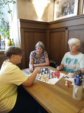
Drei Generationen am Brett im Oskar in Bayreuth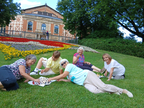
Die kneippschen Schachfreunden am grünen Hügel in Bayreuth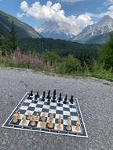
Gretas Schachbrett auf Reisen - mit Zugspitzblick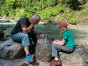
Gretas Schachbrett auf Reisen: An der Partnach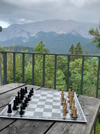
Gretas Schachbrett auf Reisen: Beim Eckbauer mit Blick aufs Wettersteingebirge (kurz vor am Wedda)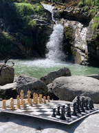
Gretas Schachbrett auf Reisen: Kuhfluchtwasserfälle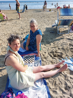
ZweiVorstandsDAMEN (Kassier Görlich und Vorstand Fischer) in Italien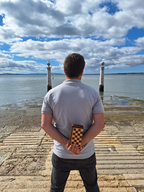
Herausforderung am Tejo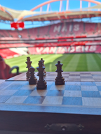
Rasenschach bei Benfica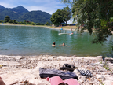
Abkühlung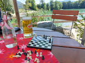
Feierabend im Chiemgau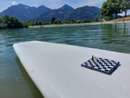
Aufm Reiflinger See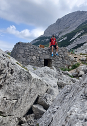
Alte Blaueishütte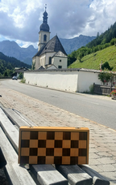
Bergsteigerdorf Ramsau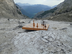
Endspieltraining auf'm Blaueisgletscher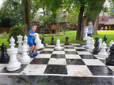
„Wenn das Reiseschachbrett nicht in den Koffer passt...“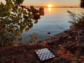
Sonnenuntergang am Chiemsee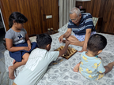
Schach Matt Opa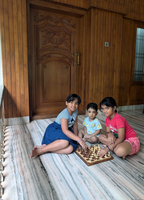
Sharing chess time with little brother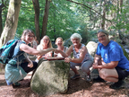
Schachfreundinnen beim Vereinsausflug im Höllbachtal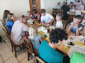
…keine Zeit zum Essen (Vereinsausflug, Röhrenhof, Rettenbach)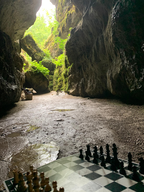
Sabines Schachbrett on Tour: Teufelshöhle bei Pottenstein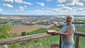
Mei Dechaham - da sama dahoam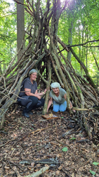
verzwickte Stellung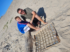
Wikingerschach in Dänemark 1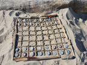
Wikingerschach gelöscht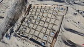
Wikingerschach gelöscht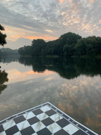
Morgendämmerung in Neuburg an der Donau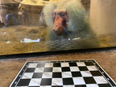
Augsburger Zoo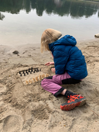
Sandschach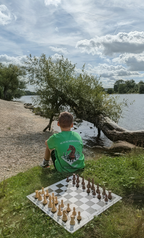
Dahoam is Dahoam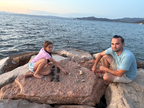
Steinschach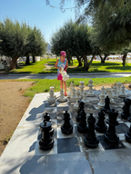
Italienisch auf Griechisch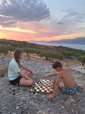
Schach am Abgrund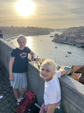
SONNENUNTERGANG ÜBER DEN DÄCHERN VON PORTO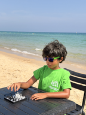
Schach am Strand (Tunesien)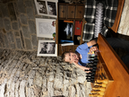
"Ein Spiel wie vor 600 Jahren" Hallemann-Turm in Tallinn. >> Bild 2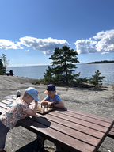
"Ein Tag auf Pihlajasaari - Zum um Zug" Insel Pihlajasaari / Helsinki / Finnland >> Bild 3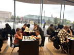
"Samstagabend in der Oodi" Zentralbibliothek Oodi in Helsinki. Finnland.>> Bild 5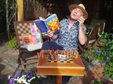
64 Felder wollen auch mal Urlaub